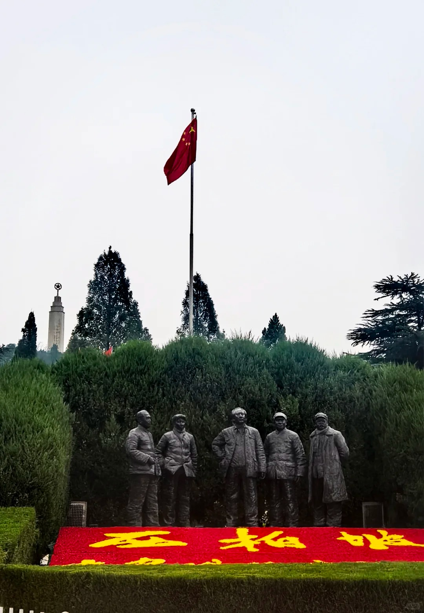
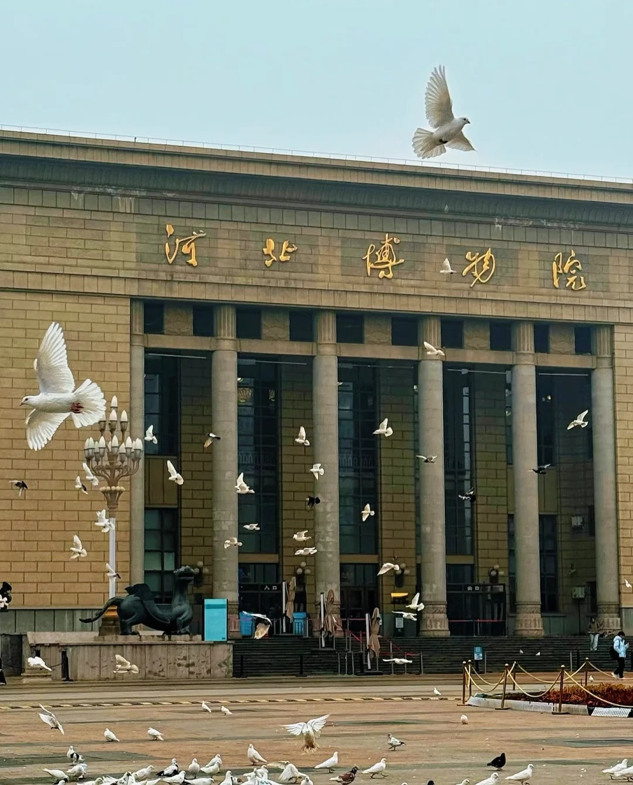
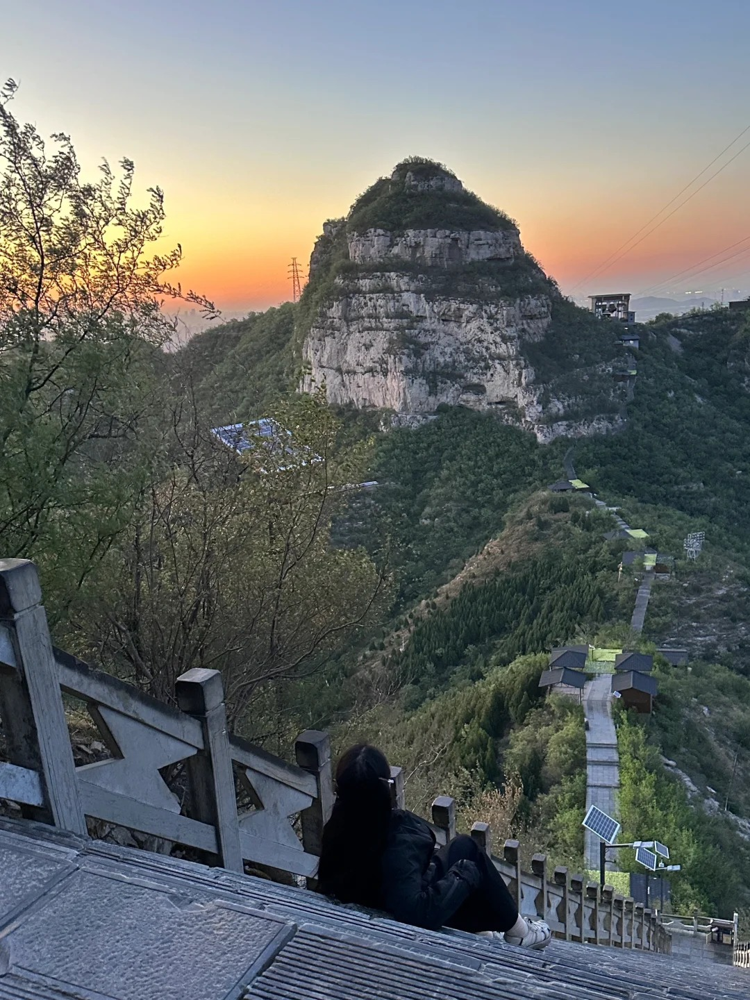

Must-See Attractions
Journey Through History and Nature

Zhengding Ancient City
A historical gem home to the Longxing Temple and the iconic Four Pagodas. Immerse yourself in well-preserved architecture from the Sui and Tang dynasties.

Zhaozhou Bridge
Built over 1,400 years ago, this Sui Dynasty masterpiece is the world's oldest open-spandrel arch bridge, showcasing ancient Chinese engineering brilliance.

Xibaipo Base
A sacred site of the Chinese Revolution. This historic village served as the CPC headquarters before they moved to Beijing in 1949.

Mount Cangyan
Known for its breathtaking scenery and the "Bridge-Building Hall"—a temple suspended between two vertical cliffs over a deep gorge.

Hebei Museum
Located in the heart of the city, it houses spectacular treasures including the world-famous "Jade Burial Suit" from the Han Dynasty.

Baoduzhai
A unique ancient hill fort on a flat-topped mountain, offering a blend of natural beauty, Taoist temples, and a "City in the Clouds" atmosphere.